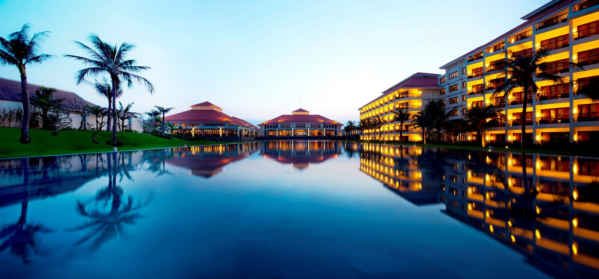
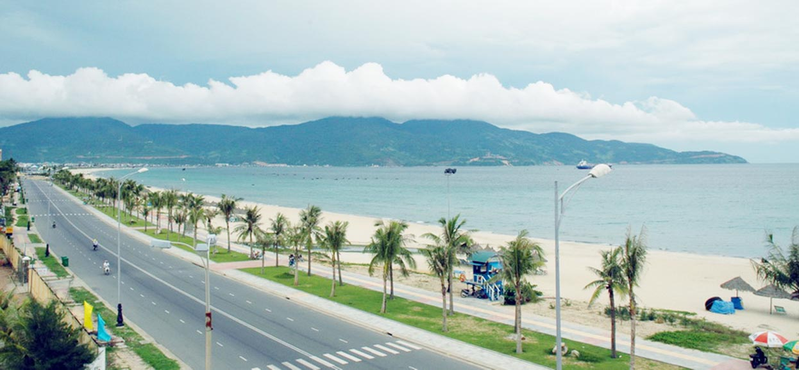
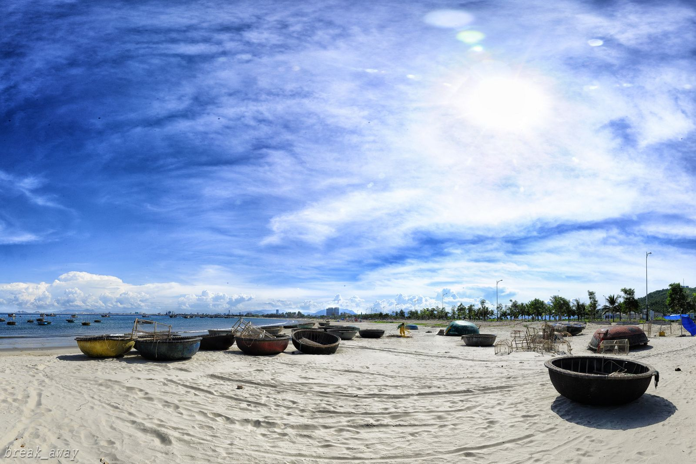
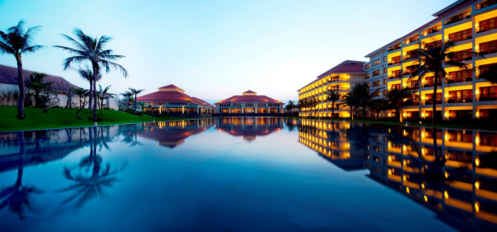
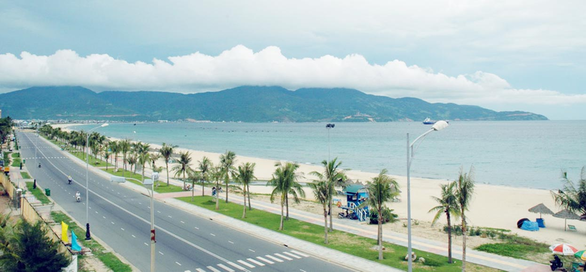
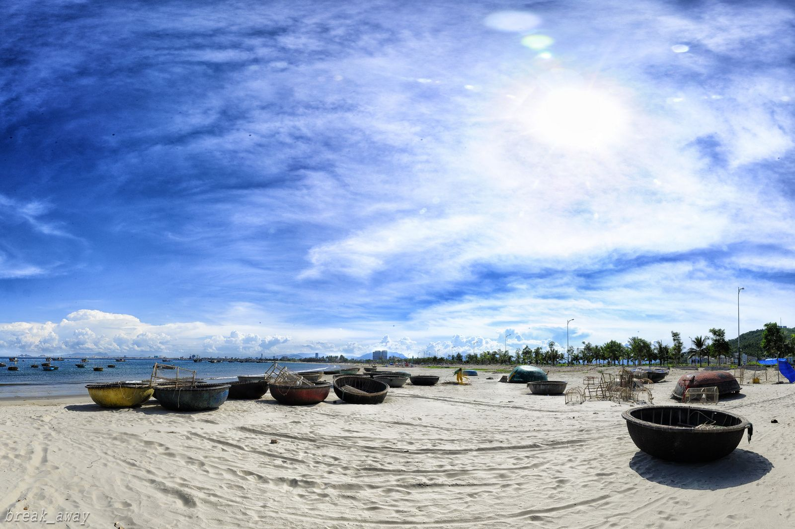

Du lịch Đà Nẵng
Tham quan du lịch một số tỉnh miền Trung
 





Chùa Linh Ứng tọa lạc trên một ngọn đồi, mang hình con rùa hướng ra biển cả, lưng tựa cánh rừng nguyên sinh bạt ngàn với bao chim thú,chùa Linh Ứng-Bãi Bụt trên bán đảo Sơn Trà vừa được khánh thành không những được xem là một công trình in đậm dấu ấn phát triển của Phật giáo Việt Nam ở thế kỷ XXI mà còn là nơi hội tụ của linh khí đất trời và lòng người.
Chùa Linh Ứng-Bãi Bụt tựa lưng vào đỉnh Sơn Trà vững chãi, mặt nhìn ra biển Đông bao la, xa xa bên tả là đảoCù lao Chàm án ngự, phía hữu là ngọn Hải Vân ngăn che với dòng Hàn giang hiền hòa thơ mộng. Sơn Tràcòn là nơi giao hòa giữa biển trời với núi sông trong khoảng không trầm lặng, với tiếng vỗ rì rầm của biển cả và lời kể về một câu chuyện thuở xưa: Vào thời vua Minh Mạng, dân chài ven biển nơi đây đã phát hiện một tượng Phật trên bãi cát, bằng lập am thờ tự. Và rồi, Ngài Quán Thế Âm cứu khổ cứu nạn xuất hiện cứu người vượt vòng trầm luân, kể từ đó sóng yên biển lặng, dân chài yên ổn làm ăn, từ đó nơi đây có tên gọi là Bãi Bụt, hay còn gọi là Cõi Phật giữa chốn trần gian.
Trải bao năm tháng thăng trầm của thời gian và lịch sử, được sự hộ trì, động viên khích lệ của Chư tôn thiền đức, sự cho phép và tạo mọi điều kiện của lãnh đạo thành phố, sự ủng hộ của đồng bào phật tử, chùa Linh Ứng-Bãi Bụt qua 6 năm xây dựng, đến nay đã sừng sững trên núi Sơn Trà như minh chứng cho sự kết hợp giữa Đạo pháp và Dân tộc, làm nên một công trình in đậm dấu ấn phát triển của Phật giáo Việt Nam ở thế kỷ XXI, dâng lên tưởng niệm Quốc Tổ Hùng Vương, liệt vị Tổ tiên nhân kỷ niệm Đại lễ 1.000 năm Thăng Long - Hà Nội.
Chùa Linh Ứng - Bãi Bụt hiện được xem là ngôi chùa lớn nhất ở thành phố Đà Nẵng cả về quy mô cũng như kiến trúc nghệ thuật. Ngôi chùa mang một phong cách hiện đại kết hợp với tính truyền thống vốn có của chùa chiền Việt Nam, với mái ngói uốn cong có hình rồng, những trụ cột vững chắc được bao quanh bởi những con rồng uốn lượn rất tinh xảo.
Khu du lịch Bà Nà - Núi Chúa thuộc địa phận huyện Hòa Vang, thành phố Đà Nẵng, cách trung tâm thành phố khoảng 50km về phía tây. Nằm ở độ cao 1.487m so với mặt biển, khí hậu quanh năm mát mẻ, nhiệt độ trung bình thành phố Đà Nẵng, vịnh Vũng Thùng với đường viền hình vòng cung từ chân đèo Hải Vân đến bán đảo Sơn Trà, bãi biển Mỹ Khê, biển Non Nước, Ngũ Hành Sơn, sông Thu Bồn uốn quanh những cánh đồng trù phú, Cù Lao Chàm giữa nhấp nhô sóng biếc...Thiên nhiên như một bức tranh thủy mặc hiếm nơi nào có được.
Bà Nà có hệ động thực vật phong phú và đa dạng. Trong những cánh rừng nguyên sinh đại ngàn là nơi cư trú của 256 loài động vật, trong đó có 61 loài thú, 178 loài chim và 17 loài bò sát. Hệ thực vật ở đây có 543 loài gồm 136 họ và 379 chi. Bà Nà là nơi có nhiều loài động vật quý hiếm cư trú như trĩ sao, gấu đen châu Á, vượn bạc má hung...Năm 1986, Bà Nà đã được Chính phủ công nhận là khu dự trữ thiên nhiên, đối tượng bảo vệ là rừng nhiệt đới và nhiều loại động thực vật quý hiếm.
Vào đầu thế kỷ 20, để phục vụ cho nhu cầu nghỉ ngơi của người Pháp tại miền Trung, nhiều nhà nghỉ, biệt thự, khách sạn đã mọc lên suốt dọc các triền núi, trên đỉnh Núi Chúa và đỉnh Bà Nà. Sau này do chiến tranh tàn phá, nơi đây trở nên hoang phế và bị lãng quên theo thời gian. Những năm gần đây, Đà Nẵng đã dần khôi phục và tôn tạo một số khu biệt thự cổ kiểu Pháp, khu văn hoá Phật giáo, hầm rượu và hàng loạt khách sạn như : Khách Sạn Morin Bà Nà, khách sạn Bà nà By Night, biệt thự, quán bar, sân tennis, cầu lông, bida...Tại đây còn thường xuyên tổ chức các đêm lửa trại, quảng bá các đặc sản vùng núi và tạo điều kiện giúp du khách đi tham quan dã ngoại. Từ đồi Vọng Nguyệt, du khách sẽ được hệ thống cáp treo hiện đại đưa đến khu trung tâm. Hệ thống này có 16 cabin có thể phục vụ khoảng 320 khách/giờ.
Hàng năm, Bà Nà đón hàng chục ngàn khách du lịch trong và ngoài nước. Một đêm nghỉ lại ở Bà Nà là dịp để du khách nghe hơi thở của núi rừng và sống giữa thiên nhiên hoang dã. Bà Nà, một điểm du lịch hấp dẫn khi bạn có dịp đến với thành phố Đà Nẵng.
Ngũ Hành Sơn thuộc phường Hoà Hải, quận Ngũ Hành Sơn, cách trung tâm thành phố Đà Nẵng khoảng 7km về phía đông nam.
Ngũ Hành Sơn không cao, sườn núi dốc đứng cheo leo, cây cỏ lơ thơ. Đá ở Ngũ Hành Sơn là loại đá cẩm thạch có nhiều màu: sáng đục, trắng sữa, hồng phấn, xám vân đỏ, nâu đen, xanh đậm..., không cứng lắm và là chất liệu rất tốt cho tạc tượng và đồ mỹ nghệ trang trí. Có nhiều truyền thuyết về sự hình thành Ngũ Hành Sơn, trong đó có truyện kể rằng: “Ngày xưa, nơi đây là một vùng biển hoang vu, chỉ có một ông già sống đơn độc trong một túp lều tranh. Một hôm, trời đang sáng bỗng nhiên tối sầm, giông bão nổi lên, một con giao long rất lớn xuất hiện vùng vẫy trên bãi cát và một quả trứng khổng lồ từ từ lăn ra ở dưới bụng. Sau đó giao long quay ra biển đi mất. Lát sau, một con rùa vàng xuất hiện, tự xưng là thần Kim Quy, đào cát vùi quả trứng xuống và giao cho ông già nhiệm vụ bảo vệ giọt máu của Long Quân. Quả trứng càng ngày càng lớn, nhô lên cao chiếm cả một vùng đất rộng lớn. Vỏ trứng ánh lên đủ mầu sắc xanh, đỏ, trắng, vàng, tím lấp lánh như một hòn gạch khổng lồ. Một hôm, ông lão vừa chợp mắt thì nghe có tiếng lửa cháy, ông cầu cứu móng rùa - vật mà thần Kim Quy đã giao lại cho ông lúc ra đi và trong lòng trứng xuất hiện một cái hang rộng rãi, mát mẻ. Ông đặt lưng xuống ngủ thiếp luôn và không biết đang xẩy ra một phép lạ: một cô gái xinh xắn bước ra từ trong trứng và nơi ông nằm là một trong năm hòn đá cẩm thạch vừa được hình thành từ năm mảnh vỏ của quả trứng...”.
Ngũ Hành Sơn gồm có 5 ngọn: Thuỷ Sơn và Mộc Sơn ở phía đông, Thổ Sơn, Kim Sơn, Hoả Sơn ở phía tây. Trong tư duy triết học của Trung Hoa thì ngũ hành: Kim, Mộc, Thủy, Hỏa, Thổ là những yếu tố cấu thành vũ trụ. Con số 5 là con số cực kỳ quan trọng trong tư duy và trong đời sống phương Đông vì vậy 5 ngọn Kim Sơn, Mộc Sơn, Thủy Sơn, Hỏa Sơn, Thổ Sơn tự trong mình nó đã hàm chứa những vẻ kỳ bí dị thường.
Ngọn Kim Sơn nằm ở phía đông nam, bên bờ sông Cổ Cò. Đi thuyền trên sông, du khách có thể ngắm bóng núi, bóng chùa in trên mặt nước phẳng lặng. Tại đây xưa có Bến Ngự, nơi thuyền Vua cập bến mỗi khi du hành Ngũ Hành Sơn. Nay bến xưa không còn nhưng cạnh chùa Quan Âm người ta vừa tìm thấy một cột lim neo thuyền ngày xưa. Ngay dưới chân ngọn Kim Sơn có một hang động dài hơn 50m, rộng gần 10m, cao khoảng 10 - 15m. Lối vào động là những bậc đá tự nhiên, bên trong là những lớp thạch nhũ bám vào vách núi tạo thành hình tượng Quan Thế Âm Bồ Tát cao bằng người thật rất thanh tú. Tượng thạch nhũ này còn sinh động hơn nhờ một lớp nhũ đá lấp lánh như dải kim tuyến phủ từ bờ vai đến gót chân tượng. Dưới chân tượng là một con rồng đang cuộn mình giữa những làn sóng. Đặc biệt, phía sau Bồ Tát còn có một hình tượng nhỏ hơn trông như Thiện Tài đồng tử và bên trái là hình chim Khổng Tước, hai cánh xoè rộng toả khắp trần động. Có thể nói đây là bức phù điêu tuyệt mỹ mà thiên nhiên đã ban cho Kim Sơn. Sau khi phát hiện ra động (1950), hoà thượng Thích Pháp Nhãn đã cho mở rộng lối vào động và xây dựng chùa Quán Thế Âm. Chùa dựa lưng vào ngọn Kim Sơn, ngoảnh mặt ra khúc sông đầy hoa sen thơm ngát. Hàng năm vào mùa lễ hội đầu xuân (19/2 âm lịch), chùa mở hội lấy tên là Hội Quán Âm.
Mộc Sơn nằm ở phía đông, sát biển, gần hòn Thuỷ Sơn. Phía đông và nam là động cát, phía bắc là ruộng và phía tây là xóm làng. Tuy thuộc hành Mộc nhưng tại đây lại rất ít cây cối. Đỉnh núi đá bị xẻ thành những răng cưa giống như cái mồng gà trống nên có thể vì vậy mà còn có tên núi Mồng Gà. Trên hòn núi này không có chùa chiền, chỉ có một khối đá cẩm thạch màu trắng trông tựa người đang ngồi. Người địa phương gọi là Cô Mụ hay Bà Quan Âm. Dưới chóp núi 10m có một kẻ đá rộng chạy ngang phía nam.Trong núi có một động nhỏ, tương truyền ngày xưa có một người đàn bà tên là Trung tu ở đó nên có tên là động Bà Trung. Trong hai cuộc kháng chiến chống Pháp và chống Mỹ cán bộ và nhân dân địa phương thường vào đây để tránh máy bay địch.